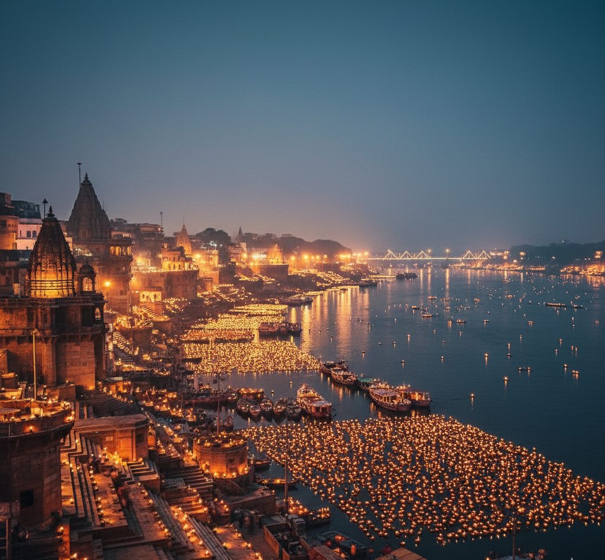

Festivals
Experiencing Dev Diwali: When Gods Descend to Kashi
Dev Diwali in Varanasi is not just a festival—it's a celestial celebration where the entire city transforms into a canvas of light...
Nov 15, 2024
5 min read
Read More